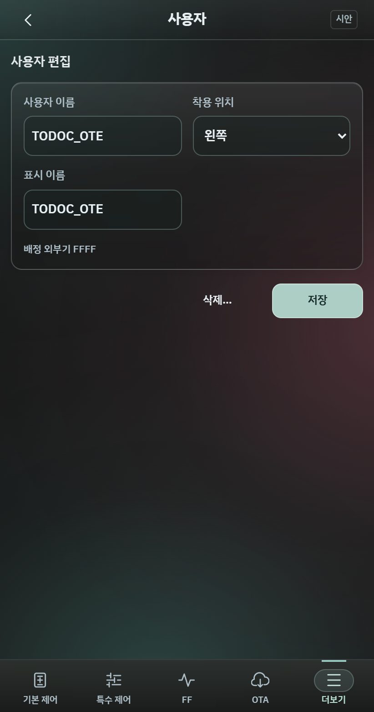
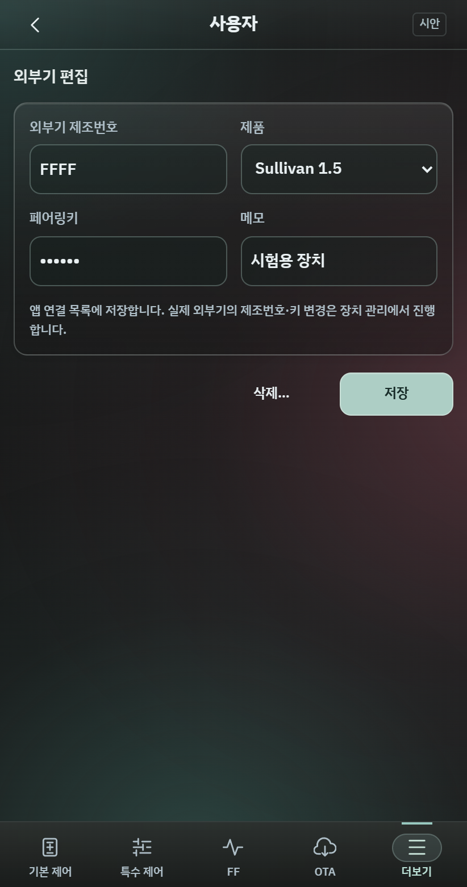
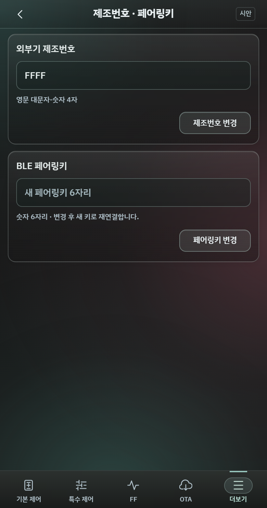
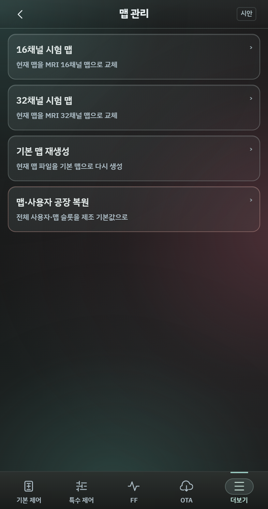

제어는 익숙한 자리에서
상태창의 배터리 → PMIC → 자극·링크 배치를 유지합니다. 본문은 원래처럼 세로로 스크롤하고 하단 메뉴는 고정합니다. 기본 제어는 기준 휴대전화의 한 화면에 들어옵니다.
기존 상태창·어두운 글래스·제어 버튼을 기준으로 돌아왔습니다. 기본 제어·특수 제어·FF·OTA 순서는 유지하고, 다섯 번째 ‘더보기’에 등록·장치 관리·로그를 합치는 안입니다.


상태창의 배터리 → PMIC → 자극·링크 배치를 유지합니다. 본문은 원래처럼 세로로 스크롤하고 하단 메뉴는 고정합니다. 기본 제어는 기준 휴대전화의 한 화면에 들어옵니다.
사용자·외부기 등록, 제조번호·키 변경, 맵, 로그의 위치를 모았습니다. 앱바의 사용자·메뉴·제조번호 표시는 제거했습니다.
앱의 외부기 목록을 편집하는 것과 실제 외부기의 제조번호·페어링키를 바꾸는 작업은 별개입니다. 각각 등록 관리와 장치 관리에 둡니다.
더보기와 하위 화면의 공통 장치 정보는 제거했습니다. 사용설명서와 화면 잠금 메뉴도 제외했습니다.




411×781 논리 크기의 12개 화면을 렌더하고, 360px 폭에서 가로 넘침을 점검했습니다. 등록/외부기 목록 이동, 편집 중 상태 열기와 초안 유지, 로그 필터·검색을 확인했습니다. 길어진 로그·목록·상세 설정은 세로 스크롤합니다.
IBM Plex Sans KR v5.0.0 Medium/SemiBold/Bold를 앱 전체에 적용하고 기존 어두운 3점 글래스를 유지했습니다. 연결 휴대전화에 debug 시안을 설치해 기본 제어·더보기·등록·로그 화면의 잘림과 정렬을 확인했습니다. 전체 접근성 평가나 실제 통신 검증 결과를 의미하지 않습니다.